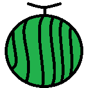
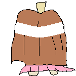

<button id="start-btn">start</button>
<button id="stop-btn">stop</button>
<div id="result-div"></div>
<div id="container">
  
  
  <div id="game-result"></div>
</div>

<script>
  const startBtn = document.querySelector('#start-btn');
  const stopBtn = document.querySelector('#stop-btn');
  const resultDiv = document.querySelector('#result-div');
  const gameResult = document.querySelector('#game-result');
  const chara = document.getElementById("chara");
  const suica = document.getElementById("suica");

  SpeechRecognition = webkitSpeechRecognition || SpeechRecognition;
  const recognition = new SpeechRecognition();

  recognition.lang = 'ja-JP';
  recognition.continuous = true;

  let finalTranscript = '';
  let rotateY = 0
  chara.style.left = window.innerWidth / 2
  chara.style.bottom = 0

  recognition.onresult = (event) => {
    for (let i = event.resultIndex; i < event.results.length; i++) {
      let transcript = event.results[i][0].transcript;
      if (event.results[i].isFinal) {
        finalTranscript += transcript;
      }
    }
    const maeCount = (finalTranscript.match(/(まえ|前)/g) || [] ).length;
    const ushiroCount = (finalTranscript.match( /(うしろ|後ろ)/g ) || [] ).length;
    const migiCount = (finalTranscript.match( /(みぎ|右)/g ) || [] ).length;
    const hidariCount = (finalTranscript.match( /(ひだり|左)/g ) || [] ).length;
    const soko = finalTranscript.match( /そこ/g );
    const position = {x: chara.getBoundingClientRect().left, y: chara.getBoundingClientRect().top}
    const suicaPosition = {x: suica.getBoundingClientRect().left, y: suica.getBoundingClientRect().top}
    console.log(position)
    console.log('mae', maeCount)
    console.log('migi', migiCount)
    console.log('hidari', hidariCount)
    console.log('ushiro', ushiroCount)
    if (soko) {
      if (Math.abs(suicaPosition.x - position.x) < 225 && Math.abs(suicaPosition.y - position.y) < 225) {
        gameResult.innerHTML = "おめでとう！！！";
        return
      }
    }
    if (migiCount > 0) {
      rotateY += 90
    } else if (hidariCount > 0) {
      rotateY += 270
    } else if (ushiroCount > 0) {
      rotateY += 180
    }
    if (rotateY % 360 == 0) {
      chara.style.top = maeCount * (-75) + +position.y
    } else if (rotateY % 360 === 90) {
      console.log('右むいてる')
      chara.style.left = maeCount * 75 + +position.x
    } else if (rotateY % 360 === 180) {
      console.log('後ろむいてる')
      chara.style.top = maeCount * 75 + +position.y
    } else if (rotateY % 360 === 270) {
      console.log('左むいてる')
      chara.style.left = maeCount * (-75) + +position.x
    }
    chara.style.transform = `rotate(${rotateY}deg)`
    resultDiv.innerHTML = finalTranscript;
    finalTranscript = ''
  }

  startBtn.onclick = () => {
    recognition.start();
  }
  stopBtn.onclick = () => {
    recognition.stop();
  }
</script>

<style>
  #container {
    background-color: burlywood;
    position: relative;
    height: 90%;
    width: 100%;
  }
  #suica {
    position: absolute;
    top: 10%;
    right: 50%;
    z-index: 1;
  }
  #chara {
    position: absolute;
    z-index: 2;
    left: 50%;
    bottom: 0;
  }
  #game-result {
    font-size: 100px;
    position: absolute;
    bottom: 50%;
    right: 50%;
    z-index: 3;
  }
</style>